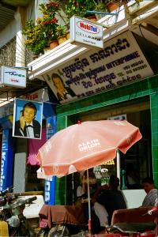
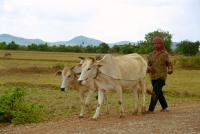

|
Samedi 21 juillet
5H30, en route pour Battambang! On a choisi un pick-up à l'extérieur, pas à
l'intérieur. Paraît qu'il y a des bancs... En fait de bancs, il y a une bâche
mouillée par terre sur laquelle on s'empresse de tremper nos fonds de culotte!
On s'allonge donc à l'arrière du pick-up, appuyés sur nos sacs à dos. Allongés
comme des pachas, on sera seuls sur la première moitié du voyage jusqu'à Sisophon.
Au bout d'une heure, un papy nous rejoint. C'est chouette! Le soleil se lève
et partout la vie s'active. Les paysans s'en vont aux champs au rythme lent
de leurs charettes à boeufs ou au trot de leurs poneys attelés. Il se met à
pleuvoir un peu mais rien d'alarmant. La route est bonne, tant mieux parce qu'on
a les fesses vermoulues suite au vélo d'hier. Hé oui, encore, on doit avoir
être fragiles des fesses! A Sisophon, on change de pick-up. Dans celui-ci, il
y a plein de sacs et cartons et une dizaine de personnes à l'arrière. C'est
pas grave, on peut en mettre 15 il paraît. C'est vrai - sûrement puisqu'ils
le disent - mais déjà on ne peut plus bouger d'un millimètre! On achète du pain...
prix annoncé en baths!!! C'est fou. Les Khmers parlent en dollars ou en baths
et oublient qu'ils ont une monnaie nationale, le riel. Combien de temps reste-t-il
avant sa disparition???
A l'arrivée à Battambang, on est assaillis par les rabatteurs! Merci messieurs,
on se débrouille tout seuls, comme des grands. Puis on se rend au centre culturel
français, comme nous l'avait conseillé Nancy qui y a bossé il y a deux ans.
Là, on rencontre Geneviève, une cambodgienne professeur de français. Très accueillante,
elle nous invite à dîner! On goûte à la Samla Kaki, une soupe faite de papaye,
potirons, haricots, légumes en feuilles, épinards et qui se mange avec du riz
et une omelette. C'est très bon. Son mari est médecin d'état. On apprend que
le salaire d'un médecin d'état est d'environ 40000 riels par mois (10 dollars
environ). Mais il peut se faire une clientèle privée si son boulot lui laisse
du temps. C'est maigre pour nourrir 5 enfants et les envoyer à l'école. Geneviève
est professeur d'état. Son salaire est d'environ 1000000 riels par mois. Hé
oui, deux fois et demi plus qu'un médecin... sans compter qu'elle donne des
cours privés. De toutes façon, le niveau de l'enseignement étant peu élevé et
incomplet selon elle, les élèves qui envisagent des études sont obligés de prendre
des cours privés.
Dimanche 22 juillet
Ce matin, on fait le marché avec Geneviève. On goûte les fruits du dragon rose
pétant, très bons, les pommes cannelles, les pamplemousses énormes, les oranges
vertes délicieuses et un ananas bien sûr! On voit des crabes de rizière. On
apprend qu'un bananier est mature en un an, donne un régime de bananes et...
c'est tout!
Cet après-midi, une balade en ville nous a permis de découvrir la cachette
d'Alain Delon! Son image est placardée partout dans la ville! Il fait une pub
monstrueuse via présentoirs de cigarettes, affiches tout le long de la rivière,
parasols vantant cigarettes et bières, enseignes pour les interphones!!! Il
ne recule devant rien "Cigarettes Alain Delon, The Taste of France". Le goût
de la France, avec une image de la tour Eiffel et tout! Il y a aussi la Alain
Delon Beer! Et à Singapour, on nous a raconté qu'il y a des étals entiers remplis
de chaussettes Alain Delon!!! Incroyable. A chaque coin de rue, on croise sa
photo ou son nom. Même une camionnette qui livre les cigarettes! On ne peut
pas lui échapper! Belle image de la France. Et la plupart des gens ignorent
qu'il est acteur. Pour eux, c'est une marque comme Adidas ou Malboro...
Ce soir, "Magie", la fille de Geneviève nous invite à goûter la soupe cambodgienne
qu'elle a cuisinée elle-même. Les ingrédients sont surprenants. Fleur de bananier,
tiges de nénuphars, germes de soja, feuilles acidulées, cacahuètes pilées, nouilles
de riz sont plongés dans une soupe faite avec des poissons bouillis puis pilés,
assaisonnée à la noix de coco et au citron vert. Délicieux.
Lundi 23 juillet
Le Cambodge nous a surpris par le nombre impressionnant de mendiants et aussi
d'éclopés. Jamais encore je n'avais vu autant de gens mutilés, les mines anti-personnel
je suppose. Cette guerre civile a vraiment tout chamboulé pour certains. Ils
ont tout perdu et se sont retrouvés à la rue. Des familles aristocratiques comme
celle de Geneviève qui a dû confectionner et vendre des gâteaux dans la rue
pour vivre avec sa famille avant de retrouver un poste d'enseignante, aux familles
paysannes qui ont perdu leurs terres, tous ont été touchés économiquement et
nombreux dans leur chair également. C'est peut-être pour cela, parce que cela
aurait pu être eux, que les khmers donnent si volontiers aux mendiants. Ca fait
réfléchir de voir toutes ces vies brisées par la guerre. Beaucoup sont ceux
qui ont du mal à se nourrir comme il faut. Parmi les plus pauvres, les cyclos.
Ils louent 1500 riels par mois leur vélo, gagnent moins de 10000 riels par mois
et doivent subvenir aux besoins de leur famille avec ça. Alors souvent, ils
travaillent dans une ville, y vivent loin de leur famille, dormant dans leur
cyclo-pousse et retournent quelques jours par mois au village retrouver les
leurs. Même Geneviève et son mari ne peuvent pas habiter la même ville. Lui
est employé à Pailin, elle à Battambang à 100 km de là, soit 3 heures de trajet
et 20000 riels (5 dollars) quand ils ne peuvent pas bénéficier de la voiture
d'un ami. Lui cultive un peu et vend les fruits de leur verger pour arrondir
les fins de mois. Elle trouve que ça n'est pas drôle de vivre séparés.
La région de Battambang à Pailin a été particulièrement touchée par les mines
anti-personnel, les Khmers Rouges étant ici dans leur fief. On a croisé de nombreux
4X4 appartenant aux démineurs. Il y a encore beaucoup de travail dans la région,
surtout en zone frontalière. Et un champ non déminé ne peut être rendu à un
paysan.
On loue une mob (qui a deux selles pas du tout rembourrées) et on part à la
découverte de la campagne. C'est assez désolé comme paysage. Pas de végétation
luxuriante ici. En revanche, on croise du monde: les gamins qui gardent les
troupeaux en groupe, les paysans et leurs bœufs ou avec leur poney et tout un
tas de gens qui vont et viennent sur la route, à pied le plus souvent. Le but
de notre balade est un temple, le Phnom Sampeu, perché sur une colline d'où
on a une jolie vue. Et c'est bien mérité (ça mériterait d'ailleurs d'être encore
mieux) vu la rude montée qu'on se tape sous plus de 40 degrés. On est arrivés
en haut de tous ces escaliers rouges, assoiffés et essoufflés! A 14H00, la mob
est cassée! Heureusement, on est à Battambang, on n'a donc pas trop à pousser.
Tant pis pour Phnom Banan, on n'y ira pas...
Suite du voyage : Vers la frontière
|
Cambodge
Battambang
|

Cambodge
Battambang
|
Cambodge
Battambang
|
Cambodge
Battambang
|
Cambodge
Battambang
|
Cambodge
Battambang
|

Cambodge
Battambang
|
|
|